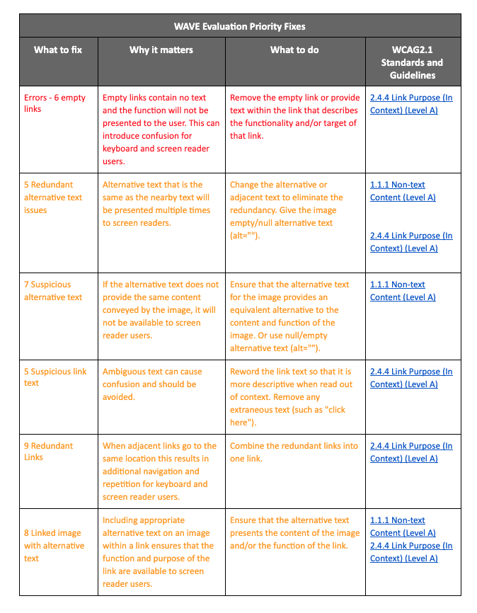

Executive Summary
This report describes the conformance of the www.yourwowyears.com website with W3C’s Web Content Accessibility Guidelines (WCAG 2.1). The review process is based on the evaluation described in Accessibility Evaluation Resources.
Based on this evaluation, the website is close to meeting WCAG 2.1, Conformance Level AA. Detailed review results are available in the Results and Recommendations section below. Resources for follow-up fixes are also listed in the table. Feedback on this evaluation is welcome.
Scope of Review
The website reviewed is www.yourwowyears.com. The web page is written in English. The review was conducted on 5/9/2020 by Christine Campbell, an independent reviewer.
Purpose of the Site
The purpose of www.yourwowyears.com is to serve as the business page for a licensed professional coach, Rita Connor. The webpage is a place to learn more about the coach, her services, her events, to read her blog and to download free forms to help with career and life choices.
Review Process
The review process consisted of reviewing the website through WebAIm’s Web Accessibility Evaluation Tool - WAVE on the accessibility standard of WCAG 2.1. I also manually checked links and forms. The site was evaluated on coding style, assistive attributes, and relative levels of support for different assistive needs.
The evaluation results in this report are based on evaluation conducted on 5/9/2020. The website may have changed since that time.
Results and Recommended Actions
This website appears to be close to meeting WCAG 2.1 A, AA, AAA.
The table below displays the elements that need to be fixed in order of seriousness (red, then orange) It explains why that fix is needed, what will need to be done and the WCAG2.1 accessibility standard that is associated with that issue.
The fixes are not challenging and should not take long or be expensive. The site is a squarespace site and it seems to have already been built with accessibility in mind. The accessibility issues seem to be ones that occured as the content was added to the website and require minor additions or eliminations.
Conclusion
The website for www.yourwowyears.com is close to being web accessible. Attending to the fixes suggested in the WAVE evaluation will bring the website closer to compliance and will ensure that users who have vision, mobility or hearing impairments are able to access the helpful and uplifting guidance being provided by this career and life coach.